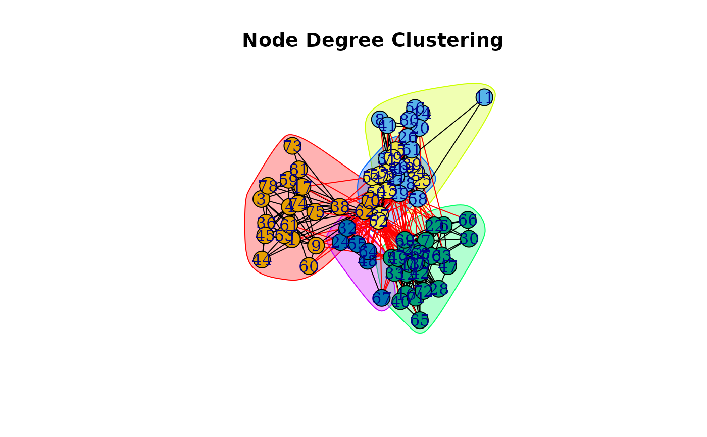

Prepared Unlabeled Graph to work with Degree-Betweenness Algorithm
Source:R/prep_unlabeled_graph.R
prep_unlabeled_graph.Rd![[Deprecated]](figures/lifecycle-deprecated.svg) Presently,
Presently, cluster_degree_betweenness() function only works with labeled graphs. prep_unlabeled_graph() is a utility function that gives an unlabeled graph labels which are string values of their vertices.
See also
cluster_degree_betweenness() which this function aids.
Examples
library(igraph)
library(igraphdata)
library(ig.degree.betweenness)
data("UKfaculty")
# Making graph undirected so it looks nicer when its plotted
uk_faculty <- prep_unlabeled_graph(UKfaculty) |>
as.undirected()
#> Warning: 'prep_unlabeled_graph' is deprecated.
#> Use '`cluster_degree_betweenness() now works with unlabeled graphs.' instead.
#> See help("Deprecated")
#> This graph was created by an old(er) igraph version.
#> ℹ Call `igraph::upgrade_graph()` on it to use with the current igraph version.
#> For now we convert it on the fly...
ndb <- cluster_degree_betweenness(uk_faculty)
plot(
ndb,
uk_faculty,
main= "Node Degree Clustering"
)

ndb
#> IGRAPH clustering node degree+edge betweenness, groups: 5, mod: 0.37
#> + groups:
#> $`1`
#> [1] "1" "3" "4" "9" "17" "36" "38" "44" "45" "53" "59" "60" "61" "62"
#> [15] "70" "73" "74" "75" "78" "81"
#>
#> $`2`
#> [1] "2" "8" "11" "14" "18" "19" "20" "21" "26" "29" "31" "41" "46" "51"
#> [15] "56" "58" "80"
#>
#> $`3`
#> [1] "5" "6" "7" "10" "12" "13" "16" "22" "23" "27" "28" "30" "33" "40"
#> + ... omitted several groups/vertices